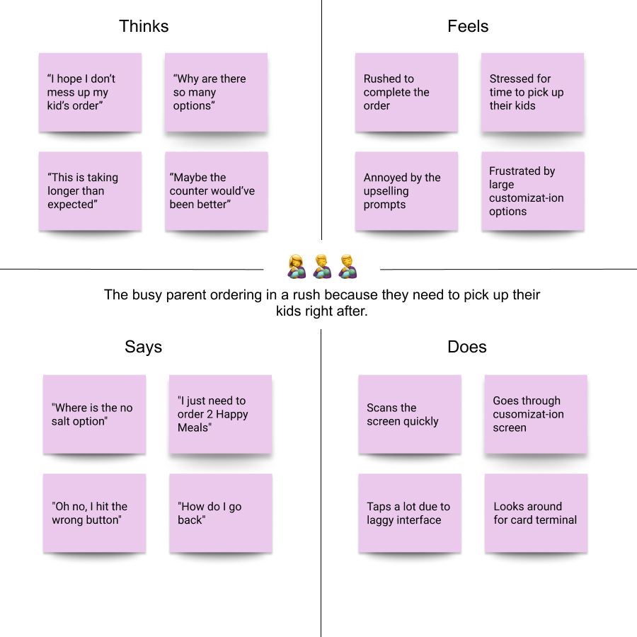
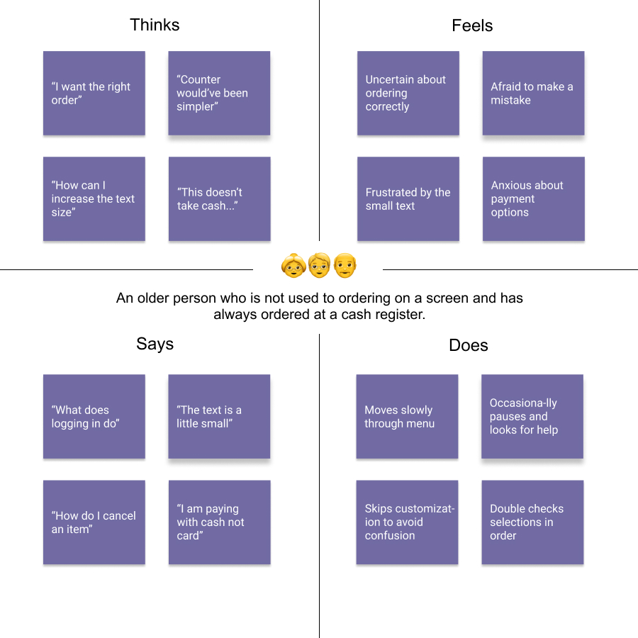

role
UX Designer
technologies
timeline
February 2025
team
Jacob Solano
introduction
For this study, I decided to focus on McDonald’s self-ordering kiosks. My goal was to better understand customers through real-world observations and interviews, translate those insights into personas, and visually map their journeys via storyboarding. Ultimately, this helped me uncover deeper UX opportunities in a ubiquitous interface.
exploration
The McDonald's kiosk, a widely-used, self-service touchscreen interface lets customers independently order, customize, and pay for their food, emphasizing convenience and efficiency for the user. I visited a local McDonald's to explore the kiosk interface and observe customers interacting with it.
Landing Screen
- Skip Login Button: jumps straight to the menu.
- Login Button: opens McDonald’s account login.
Menu Screen:
- Displays food categories as tappable cards.
- Customization options appear on a secondary screen.
Payment Process:
- "View My Order” starts the checkout flow.
- Payment via embedded card reader.
personas
Observations & Questions
After some time observing customers, I noticed a variety of behaviors.
Observation 1
Users typically paused briefly before engaging, scanning the screen.
Observation 2
Customizing meals was straightforward for some but seemed complex for others.
Observation 3
One user had to switch to cash payments at the register due to kiosk limitations .
Observation 4
Some users completed transactions smoothly and swiftly, while others lingered after finishing.
Then I asked open-ended questions to dig deeper:
Question 1
What surprised you about this interface?
Question 2
How did you navigate through the menu?
Question 3
Did you face any difficulties? Which ones?
Question 4
Why choose the kiosk over the counter?
Question 5
Would you use it again? Why or why not?
Interview Insights
After conducting interviews with three users, I gathered valuable insights into their experiences. Each user had a unique perspective, but common themes emerged. I highlighted key differences between users based on age and other factors in order to understand their needs and frustrations better.
Younger Frequent Customer
Loved the speed but wanted quick-scroll shortcuts.
The occasional lag frustrated them, yet they still the
preferred kiosk speed to the counter.
Parent Customer
Found upsell prompts distracting.
Appreciated clear navigation but desired a progress
indicator to keep kids moving.
Older Customer
Struggled with small text and extra taps.
Yet, they wanted larger type and clearer payment cues to
feel confident using the kiosk.
Persona Development
From these insights, I created two key personas to guide design changes for clarity, accessibility, and speed.
Rushed Parent: Taylor
Works long hours and juggles daycare pickup—needs a fast, clear flow.
Older User: Rory
Retired and budget-minded—needs larger text and fewer surprises.
storyboarding
Lastly, in order to help understand my users more deeply and visualize Rory’s path, I sketched a step-by-step storyboard from approach to order confirmation.
takeaways
This exercise highlighted the power of real-world observation, interviews, and personas in uncovering usability gaps. Next steps include prototyping larger text options, progress indicators, and shortcut features to streamline the kiosk experience for all. This iterative, empathy-fueled process reflects my principles as a full-stack SWE: building reliable, purpose-driven systems with precision and a touch of childlike wonder, as it helps me understand the user's needs and environements better of the systems I build.